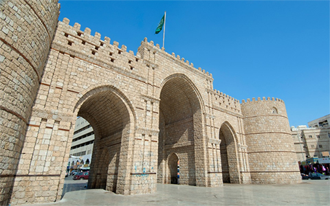
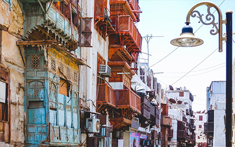

Cidde Şehri
Cidde hakkında Cidde (Cidde olarak da bilinir), Kızıldeniz kıyısında bulunan bir Suudi Arabistan şehridir ve batı Suudi Arabistan'ın en büyük kentsel merkezidir. Mekke Eyaletinin en büyük şehri, Kızıldeniz'deki en büyük deniz limanı ve Suudi Arabistan'ın başkent Riyad'dan sonra ikinci büyük şehridir. Şehrin nüfusu şu anda 3.4 milyonun üzerinde. Suudi Arabistan'da önemli bir ticaret merkezidir. Cidde, sağlıklı Müslümanların hayatlarında en az bir kez ziyaret etmeleri gereken İslam'ın en kutsal şehri olan Mekke'ye açılan ana kapıdır. Aynı zamanda İslam'ın ikinci en kutsal yeri olan Medine'ye açılan bir kapıdır. Cidde, tüm Suudi Arabistan şehirlerinin en kozmopolit ve hoşgörülü olup, dünyanın her yerinden Cidde'yi evleri yapan gurbetçilere ev sahipliği yapmaktadır. Ekonomik olarak Cidde, Suudi Arabistan ve Orta Doğu'daki bilimsel ve mühendislik liderliğine sermaye yatırımını daha da geliştirmeye odaklanıyor.[2] Cidde, 2009 yılında İnovasyon Şehirleri Endeksi'nde inovasyon açısından Afrika / Orta Doğu bölgesinde bağımsız olarak 4. sırada yer aldı.
Suudi Arabistan Havayolları'nın genel merkezi, Cidde'yi Orta Doğu'nun Dubai'den sonra ikinci ticaret merkezi olarak tanımlayan, tüm başkentlerine iki saatlik uçuş mesafesindeki Orta Doğu ve Kuzey Afrika'nın kapsadığı bölgenin kalbinde yer alıyor. Ayrıca Cidde'nin sanayi bölgesi, Riyad, Jubail ve Yanbu'dan sonra Suudi Arabistan'ın dördüncü büyük sanayi şehridir.Kral Abdullah Caddesi
Kral Abdullah Caddesi, şirketlerin ofisleri ve ticari gelişmeler için önemli bir yerdir. Sokak, Emaar Middle East ve Al-Farsi gibi Suudi Arabistan'daki en güçlü holdinglerden bazılarına ev sahipliği yapıyor. Bu bölgedeki ekonomik patlama nedeniyle, doğu dünyasının en büyük MİA'larından biri olacak bir merkezi iş bölgesi planlanmaktadır.
Tahliye Caddesi
Tahlia Caddesi, Cidde şehir merkezinde önemli bir moda ve alışveriş caddesidir. Prada, Gucci, Burberry, Chanel, Giorgio Armani ve Diesel gibi birçok lüks mağaza ve butik içerir.
Yerel mutfak
Cidde sakinleri birkaç farklı etnik köken ve milletten oluşan bir karışımdır. Bu ırk karışımının Cidde'nin geleneksel mutfağı üzerinde büyük etkisi oldu. Al Tazaj gibi diğer yerel fast food restoranları, baharatlı ızgara tavuk (Farooj olarak adlandırılır) ve Tahina'nın bir tarafını soğan ve baharatlarla servis eder. Foulameez, Faul ve Tameez'e şu şekilde hizmet eder:
Şehir Kapıları
Cidde'nin devasa eski duvarları, şehri Kızıldeniz'den gelen Portekiz saldırılarından korumak için inşa edildi. Duvar artık ayakta olmasa da, altı etkileyici kapı ve kule şehrin her yerinde hayranlıkla izlenebilir. Kapılar hava karardıktan sonra çekici bir şekilde aydınlatılır, bu nedenle kapıları aramak için eski şehirde bir gece gezintisi yapmak Cidde'yi keşfetmek için harika bir yoldur.
El Balad, Eski Cidde
Cidde şehri, balıkçılar tarafından şimdiki Al-Balad mahallesinde kurulduğu 7. yüzyıla kadar uzanıyor. Bölge, şehrin geleneksel mercan taşları ve ahşaptan yapılmış en eski ve en güzel binalarından bazılarına sahip olmakla övünen antik hissini hala koruyor.